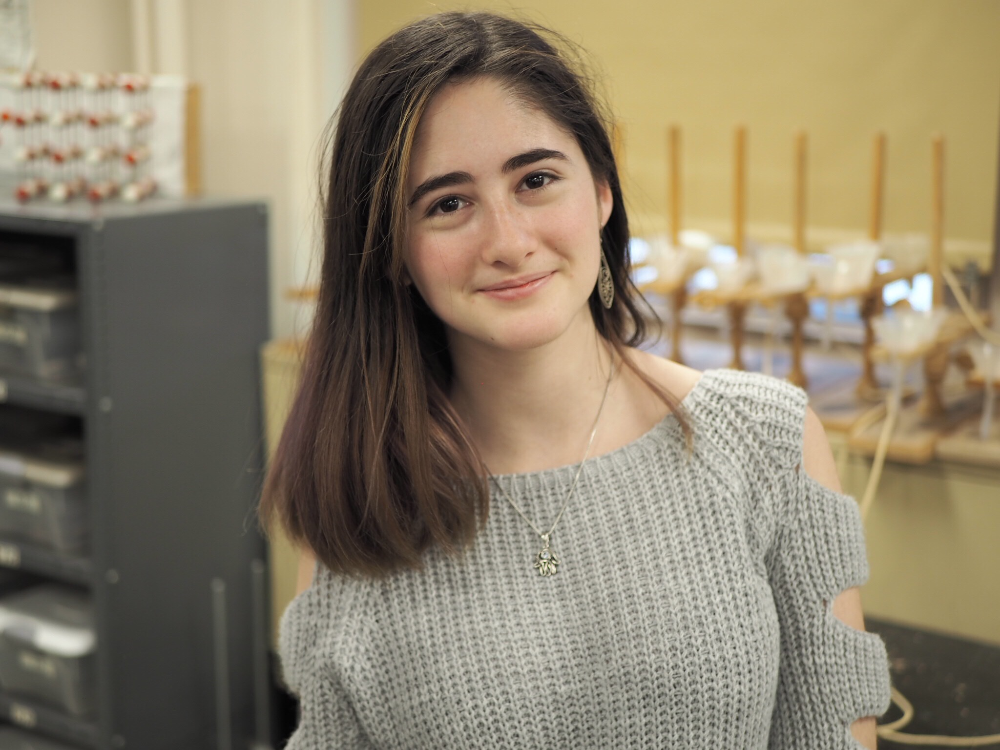
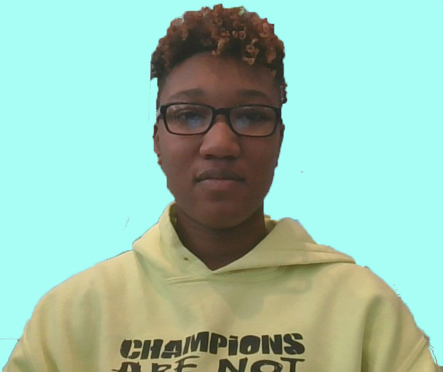
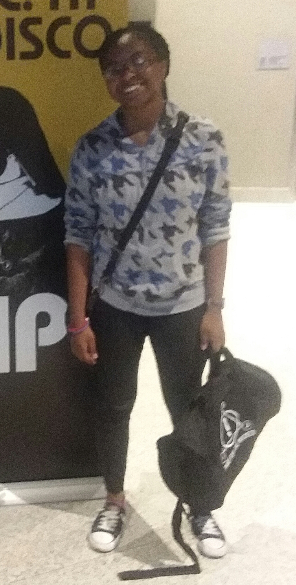
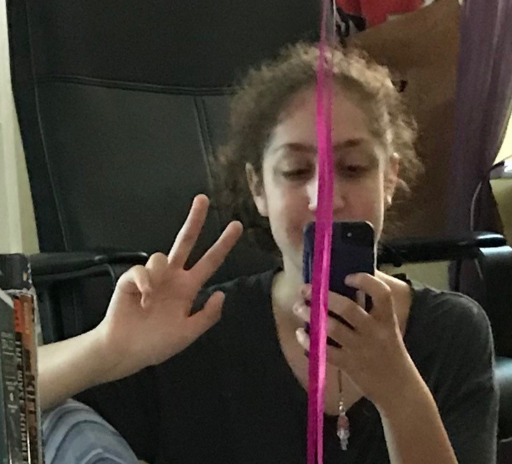

Cool-Cat Recipes was founded in August of 2018.
Our main goal is to provide recipes that can be used by anyone at anytime. If you’re a busy mom on the go you can use our quick 30-minute recipes to fill up those darn heckin TEENAGERS!!!!! If you’re an elder, you can use our recipes to make sweet desserts for those young whipper-snappers! (aka: gremlins). Our site is available for anyone to use and if you need help, our forums are open 24/7. Our goal is to provide “recipies”(get it?) that put a smile on your face and make your multiple bellies STUFFED.
MEET OUR TEAM!

This is Anne in her natural habitat, a chemistry lab. She’s a cool nerd who likes books, cats, baking, and photography. 👻deathandoom 📷anne.cats_

This is Leila. Leila is 16 and should have been born in the late 80's so she could experience the 90's. Leila is an old soul. Leila is pretty radical.

This is Jada at a Panic! at the Disco concert.She doesn't often like to interact with the outside world, but when she does, she usually enjoys
going on rollercoasters, playing the flute and hiking/walking.She likes to read, listen to music and stress about the future.

This is renee. She doesn't really sleep, is overly apologetic, and enjoys drawing and reading. Thats all folks